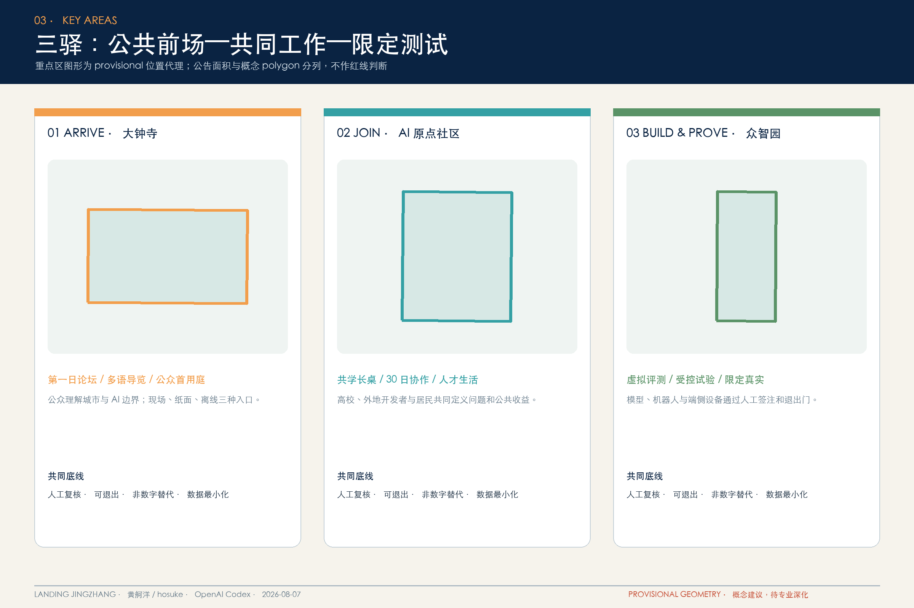
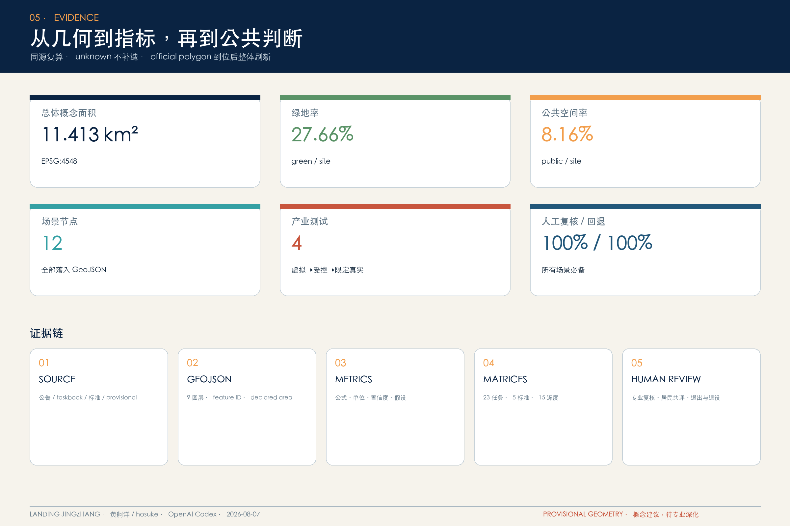

总览地图｜三层范围
统筹研究—总体设计—重点区域相互传导；图形为 provisional 概念底板。

用地分区｜建筑
完整覆盖、共享边、无重叠；建筑只表达概念载体，拆改留与强度待专业确认。

重点区域｜更新项目
大钟寺 ARRIVE、AI 原点 JOIN、众智园 BUILD & PROVE。

交通慢行｜蓝绿公共空间｜AI 场景
12 个节点均有人工接管、退出及非数字替代。

核心指标
页面值严格对齐 metrics.json；以 EPSG:4548 复算。
site_area_sqm11.413 km²
green_ratio27.66%
public_space_ratio8.16%

任务覆盖
公告 1.3/1.4/1.5 与 agent.1—6 全覆盖。
三张矩阵
23 项任务、5 项 mandatory 标准、15 项设计深度，均映射正文、GeoJSON、指标、图纸。
来源
公开公告、清权 taskbook、专业标准与八个官方案例；图片、Logo、UI 均未搬用。
假设
边界、控规、建筑、文保、交通与市政资料缺口均登记，正式数据到位后重算。
自检状态与精度提示
本页完全离线，不加载 CDN、地图瓦片、脚本、外部字体、API 或追踪。当前 polygon 为仓库 provisional geometry；仅供概念比较和内容评审，不作为精确红线、审批或工程依据。最终状态以 self_check.json 及 PR CI 为准。